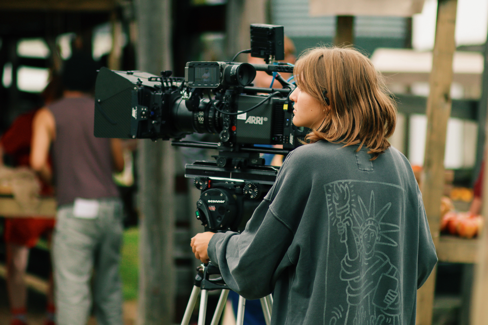

Sara Vanderlaan is a versatile camera person located in Brooklyn NY. Her creative journey thus far has been marked by an array of different genres - from broadcast journalism and short films to exploring concert photography, commercials, documentaries, features and corporate productions. Sara is eager to continue to expand her artistic horizons driven by a passion for visual storytelling and collaboration.
During her time at Hempfield High School, Sara immersed herself in communications and technology courses. While honing her skills in broadcast journalism, she ventured into documentary and narrative filmmaking. Her artistic endeavors have been recognized at festivals such as the Golden Lion and Mid Atlantic National Academy of Television Arts and Sciences.
Sara graduated from the University of North Carolina School of the Arts with a BFA in film studies, where she trained on industry-standard equipment in student led productions. She gained experience operating, assisting, loading 35 and 16mm film and utility work. While her expertise lies primarily within the camera department, she also brings valuable experience in grip and electric, art department, production and post production roles.